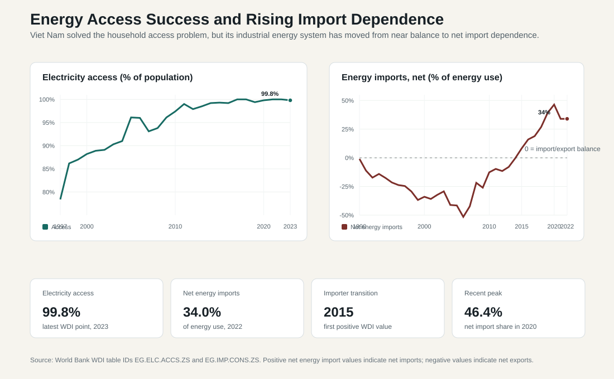

11.1 Energy Access and Power System Reform
ASEAN comparative lens (2026). Vietnam should be read in ASEAN comparison as ASEAN's most prominent party-led, export-manufacturing upgrading case. Unlike the Philippines' service-remittance profile, Thailand's older industrial-tourism base, Malaysia's resource-industrial federal structure, or Indonesia's archipelagic domestic-market scale, Vietnam's comparative issue is how a socialist party-state manages very open global production networks. For this section, the regional comparison should compare electricity, transport, logistics, ports, corridors, broadband, and climate resilience as regional connectivity and state-reach systems. Local comparable indicators show: population 100.99 million (2024), rank 3 among the nine ASEAN reports in this workspace; GDP US$476.39 billion (2024), rank 4 among the nine ASEAN reports in this workspace; GDP per capita US$4,717 (2024), rank 5 among the nine ASEAN reports in this workspace; real GDP growth 7.09% (2024), rank 1 among the nine ASEAN reports in this workspace; government effectiveness 0.09 (2023), rank 6 among the nine ASEAN reports in this workspace; internet use 84.15% (2024), rank 4 among the nine ASEAN reports in this workspace. Use `sources/documents/regional/asean_comparative_lens_2026.md` together with ASEANstats, ASEAN Secretariat materials, and the country processed-indicator files before making cross-ASEAN claims.
Vietnam’s energy sector has entered a new stage. In earlier development phases, the central policy challenge was to expand electricity access and support industrialization. That task was largely successful: Vietnam built one of the more effective electrification records among developing economies, and electricity became a foundation for manufacturing, urbanization, poverty reduction, and public-service expansion. The current problem is different. Vietnam must now ensure that the power system is reliable, affordable, low-carbon, financially sustainable, and capable of supporting a much more sophisticated industrial economy.
Energy access therefore should no longer be understood only as household connection to the grid. In a rapidly industrializing economy, energy access also means reliable electricity for factories, export-processing zones, digital infrastructure, ports, logistics systems, households, schools, hospitals, and urban services. Vietnam’s development model depends heavily on manufacturing exports, foreign direct investment, and participation in global supply chains. For this reason, power shortages carry more than technical significance. They directly affect investor confidence, production schedules, employment, export performance, and the credibility of Vietnam as an industrial platform.
The policy challenge is particularly acute because electricity demand is rising rapidly. Vietnam’s revised Power Development Plan VIII, approved in April 2025, aims to increase total generation capacity from over 80 GW in 2023 to roughly 183–236 GW by 2030. The plan requires an estimated USD 136.3 billion in power-sector investment and seeks to meet industrial demand while reducing excessive reliance on coal. ([Reuters][1]) This scale of expansion shows that Vietnam’s electricity problem is not marginal. It is one of the central constraints on the country’s next stage of growth.
Energy security is the first major policy issue. Vietnam’s power system must provide enough electricity at the right time, in the right places, and with sufficient reliability. The 2023 summer power shortages and subsequent concerns in 2024 demonstrated that high GDP growth, manufacturing expansion, drought-related hydropower constraints, and grid bottlenecks can combine to create serious supply risks. The OECD’s 2025 economic survey explicitly links renewable-energy development to energy security, noting the importance of renewables in light of power outages in summer 2023 and May–June 2024. ([OECD][2]) For Vietnam, electricity supply adequacy is therefore a development-policy issue, an issue that reaches beyond the utility sector.
The same energy-security problem appears in the net energy import data. World Bank WDI data show that Vietnam moved from a near-balanced or net-export energy position in the 1990s and 2000s to clear net import dependence after the mid-2010s. The WDI series `EG.IMP.CONS.ZS` is defined as net energy imports as a share of energy use. Negative values indicate net exports, while positive values indicate net imports. Vietnam's value was -0.9 percent in 1990, remained negative through most of the 2000s and early 2010s, turned positive in 2015 at 8.3 percent, reached a recent peak of 46.4 percent in 2020, and stood at 34.0 percent in 2022, the latest WDI point in the downloaded series. ([World Bank WDI][10])

This trend changes the interpretation of energy policy. Vietnam has largely solved the basic electricity-access problem, with access near 100 percent in recent WDI data. But the industrial energy system is becoming more externally exposed. Import dependence can appear through coal, oil products, LNG, electricity purchases, equipment, and fuel-price pass-through. It does not automatically mean vulnerability if imports are diversified, affordable, and backed by adequate infrastructure. It does mean, however, that energy planning must include fuel security, import contracts, port and terminal infrastructure, exchange-rate risk, price volatility, strategic reserves, and regional electricity trade.
Rising import dependence also complicates decarbonization. LNG may help provide flexible capacity and reduce local pollution relative to coal, but it increases exposure to global gas prices and long-term contract risk. Imported coal can support baseload generation but deepens both carbon lock-in and external supply dependence. Cross-border hydropower imports can improve supply adequacy but create regional environmental, diplomatic, and transmission-security issues. Renewable energy, storage, demand response, and grid modernization therefore have an energy-security role as well as a climate role: they can reduce exposure to imported fuels if they are integrated reliably.
The second policy issue is the energy transition. Vietnam has committed to net-zero emissions by 2050 and has joined the Just Energy Transition Partnership, which was announced in 2022 with an initial USD 15.5 billion package of public and private finance. ([SEA Energy Transition Partnership][3]) This commitment creates pressure to reduce coal dependence, expand renewables, strengthen the grid, and introduce new technologies such as offshore wind, battery storage, pumped storage, green hydrogen, and possibly nuclear power. However, the energy transition must be managed carefully. If the transition is too slow, Vietnam risks carbon lock-in and future trade or investment penalties. If it is poorly sequenced, Vietnam risks power shortages, higher costs, and investment uncertainty.
The revised PDP8 shows this tension clearly. It accelerates renewable-energy targets and reintroduces nuclear power as a long-term option. The U.S. International Trade Administration reports that the April 2025 revision increased onshore and nearshore wind targets to 26,066–38,029 MW by 2030 and raised offshore wind ambition compared with the original PDP8. ([Trade.gov][4]) Reuters reported that the revised plan also reintroduced nuclear energy, with initial nuclear plants expected between 2030 and 2035 and a projected 6.4 GW of nuclear capacity in the first phase. ([Reuters][1]) This indicates that Vietnam is not relying on a single transition pathway. Instead, it is trying to combine renewables, grid expansion, LNG, hydropower, coal reduction, nuclear planning, and regional electricity trade.
However, Vietnam’s energy transition faces serious implementation constraints. The country experienced very rapid solar expansion in the late 2010s, but the grid was not sufficiently prepared to absorb variable renewable power. This created curtailment, congestion, and regulatory uncertainty. AP reported that Vietnam’s rapid solar growth from 2018 to 2020 overwhelmed the outdated electricity grid and contributed to a slowdown in further solar development. ([AP News][5]) The lesson is important: renewable capacity alone does not guarantee energy transition. A successful transition requires transmission investment, flexible generation, storage, dispatch reform, pricing reform, and better coordination between power-source planning and grid planning.
Power supply adequacy is therefore the third major issue. Adequacy means that the system has enough firm capacity, transmission capacity, reserve margin, fuel security, and operational flexibility to meet demand under normal and stressed conditions. Vietnam’s system faces several adequacy risks. Hydropower is vulnerable to drought. Coal creates emissions and import-dependence concerns. LNG projects face financing, pricing, infrastructure, and global gas-market uncertainty. Offshore wind has large potential but faces high cost, permitting, seabed planning, grid-connection, and power-purchase-agreement challenges. Solar and onshore wind can be deployed more quickly but require grid flexibility and storage. Nuclear may contribute to long-term baseload security, but it raises questions of safety, cost, institutional readiness, financing, human resources, and public confidence.
This means that Vietnam’s electricity policy must balance four objectives at once: reliability, affordability, decarbonization, and investment credibility. Reliability requires sufficient generation and transmission capacity. Affordability requires electricity prices that protect households and firms while allowing cost recovery. Decarbonization requires a declining role for coal and rising shares of renewables and low-carbon technologies. Investment credibility requires predictable rules for tariffs, power-purchase agreements, grid access, procurement, licensing, and dispute resolution. These objectives can conflict. For example, keeping electricity prices too low may protect consumers in the short run but weaken investment incentives and the financial position of the power utility. Rapid renewable expansion may reduce emissions but can create grid instability if transmission and storage lag behind.
Power system reform is therefore indispensable. Vietnam’s earlier model relied heavily on state-led planning and the central role of Vietnam Electricity. That model helped expand access and build a national power system, but it is less suited to a more complex electricity system with multiple private investors, renewable generators, LNG projects, distributed solar, cross-border power trade, storage technologies, and industrial consumers seeking reliable clean power. The World Bank’s study of power-sector reform describes Vietnam’s power sector as a rapid development success since the 1990s, but also emphasizes that this success occurred under a state-led model that now faces reform needs. ([openknowledge.worldbank.org][6])
The reform agenda includes several institutional components. First, Vietnam needs stronger power planning and project implementation. PDP8 is ambitious, but the key question is whether planned projects can be financed, permitted, constructed, connected, and dispatched on time. Second, the country needs grid modernization. Transmission and distribution networks must be expanded and digitized to integrate renewable power and supply industrial regions. The EU and UK noted in 2025 that JETP-related grid investment would increase the national transmission network’s capacity to integrate renewable energy and deliver reliable electricity in key southern economic regions. ([eeas.europa.eu][7]) Third, Vietnam needs pricing and tariff reform. Electricity prices must balance social affordability with the need to attract investment and maintain the financial sustainability of utilities.
Fourth, Vietnam needs clearer renewable-energy regulation. Investors require predictable rules for auctions, direct power purchase agreements, grid connection, curtailment compensation, land access, offshore wind surveys, and environmental approvals. Fifth, Vietnam needs stronger regional energy cooperation. The revised power-planning framework includes attention to cross-border grid connections and electricity imports from ASEAN and Greater Mekong Subregion countries with hydropower potential. ([vepg.vn][8]) This may improve supply adequacy, but it also creates new questions about dependence on external hydropower, transmission security, pricing, and regional environmental impacts.
A further issue is energy justice. Energy transition is not only a technical matter of replacing coal with renewables. It affects workers, electricity consumers, coal-dependent localities, industrial competitiveness, rural communities, and vulnerable households. The Just Energy Transition Partnership explicitly frames the transition as both green and equitable, and UNDP has emphasized the need to integrate just-transition principles into project screening, monitoring, and investment appraisal. ([UNDP][9]) For Vietnam, this means that power-sector reform must consider distributional consequences: who pays for grid expansion, who benefits from renewable investment, how workers are reskilled, how poor households are protected, and how provinces dependent on conventional energy are supported.
From a policy perspective, Vietnam’s energy problem is best understood as a sequencing problem. The country cannot shut down coal before reliable alternatives, grid capacity, and storage are available. It also cannot delay transition indefinitely without increasing emissions, pollution, and future adjustment costs. LNG may provide flexibility but exposes Vietnam to global fuel-price volatility and import dependence. Nuclear may improve long-term baseload security but requires strong regulatory capacity and long preparation. Renewables offer major potential but require system flexibility. Thus, Vietnam’s challenge is not to choose one technology, but to build a coordinated power system in which different technologies, grid assets, market rules, and regulatory institutions work together.
The administrative implications are substantial. Energy policy requires coordination among the Ministry of Industry and Trade, Vietnam Electricity, provincial governments, investors, grid operators, environmental authorities, financial regulators, construction agencies, and international partners. Industrial policy, climate policy, land policy, public investment, foreign investment, and regional diplomacy all enter the power-sector reform agenda. If coordination is weak, Vietnam may face a paradox: large planned capacity on paper but insufficient reliable electricity in practice. This is why electricity supply adequacy should be measured not only by installed capacity, but also by dispatchable capacity, transmission availability, reserve margins, fuel security, and implementation progress.
Vietnam’s energy access and power-system reform agenda therefore has three layers. The first is universal and reliable access: households and firms must receive affordable and stable electricity. The second is industrial adequacy: the system must support high-growth manufacturing, digital infrastructure, logistics, and urbanization. The third is energy transition: Vietnam must gradually shift toward a lower-carbon system without undermining reliability or affordability. These three layers must be pursued together. A low-carbon system that cannot deliver reliable power will not sustain development. A reliable system based on long-term coal dependence will create environmental and trade risks. A cheap system that prevents cost recovery will discourage investment. The central policy challenge is to reconcile these objectives through credible reform.
Policy Implications
Vietnam should treat electricity as a strategic infrastructure system rather than as a narrow utility service. First, power supply adequacy should be elevated to a core industrial-policy objective because manufacturing, FDI, digital services, and logistics all depend on reliable electricity. Second, PDP8 implementation must be monitored through actual project delivery, grid connection, financing closure, and reserve margins, not only through announced capacity targets. Third, renewable expansion must be matched by transmission investment, storage, demand response, and dispatch reform. Fourth, electricity pricing should protect vulnerable households while allowing cost recovery and investment. Fifth, Vietnam should strengthen regulatory capacity for LNG, offshore wind, direct power purchase agreements, nuclear planning, and cross-border electricity trade. Finally, energy transition should be just and administratively credible: it must reduce emissions while protecting energy security, workers, consumers, and industrial competitiveness.
Energy Access and Power-System Reform Issues
| Policy issue | Main problem | Administrative implication |
|---|---|---|
| Energy access | Access is no longer only household electrification; it now means reliable electricity for firms, services, and digital systems | Requires reliability indicators, service-quality monitoring, and regional equity in supply |
| Supply adequacy | Rapid demand growth creates risks of shortages, especially under drought, grid congestion, or delayed projects | Requires reserve-margin planning, firm capacity, grid expansion, and fuel-security strategy |
| Rising energy import dependence | Net energy imports turned positive in 2015 and reached 34.0% of energy use in 2022 | Requires fuel diversification, import-contract governance, strategic reserves, terminals, efficiency, and domestic renewable integration |
| Energy transition | Coal reduction and renewable expansion must occur without undermining reliability | Requires sequencing, storage, flexible generation, and credible transition finance |
| Grid modernization | Solar and wind expansion can exceed transmission capacity | Requires investment in transmission, smart grids, dispatch systems, and regional interconnections |
| Power market reform | State-led planning alone is insufficient for a complex mixed-investor system | Requires transparent tariffs, competitive procurement, bankable PPAs, and regulatory independence |
| Affordability | Low prices protect consumers but may weaken utility finances and investment incentives | Requires targeted protection for vulnerable users and cost-reflective pricing over time |
| LNG and fuel security | LNG can provide flexibility but increases import and price risks | Requires procurement strategy, terminal planning, and price-risk management |
| Offshore wind | Large potential but high cost and regulatory complexity | Requires seabed planning, grid access, environmental rules, and long-term contracts |
| Nuclear power | Possible long-term baseload option but institutionally demanding | Requires safety regulation, financing, workforce training, and public trust |
| Just transition | Energy transition creates social and regional distributional effects | Requires worker reskilling, provincial support, social protection, and participatory planning |
[1]: https://www.reuters.com/business/energy/vietnam-says-boost-power-capacity-136-bln-plan-2025-04-17/?utm_source=chatgpt.com "Vietnam adds nuclear to $136 billion plan to boost power capacity"
[2]: https://www.oecd.org/en/publications/oecd-economic-surveys-viet-nam-2025_fb37254b-en/full-report/unlocking-low-carbon-economic-growth_d1fdfa53.html?utm_source=chatgpt.com "OECD Economic Surveys: Viet Nam 2025"
[3]: https://www.energytransitionpartnership.org/wp-content/uploads/2025/07/2023.05.05_revised_V-JETP_Policy-Brief_Energy_EN.pdf?utm_source=chatgpt.com "Policy Brief ELECTRICITY PRODUCTION ASPECT"
[4]: https://www.trade.gov/market-intelligence/vietnam-revised-power-development-plan-viii?utm_source=chatgpt.com "Vietnam Revised Power Development Plan VIII"
[5]: https://apnews.com/article/832e7b8bb7c103fb17e1f86121f735cf?utm_source=chatgpt.com "Vietnam plans energy shift toward building more solar, less reliance on gas and coal"
[6]: https://openknowledge.worldbank.org/entities/publication/fc5e7abe-500e-515b-8ece-8b24f452dda7?utm_source=chatgpt.com "Publication: Learning from Power Sector Reform Experiences"
[7]: https://www.eeas.europa.eu/jetp-may2025-pr_en?utm_source=chatgpt.com "EU and UK welcome Viet Nam JETP progress on occasion of ..."
[8]: https://vepg.vn/wp-content/uploads/2025/07/EN_Dieu-chinh-Quy-hoach-dien-VIII-EAV.pdf?utm_source=chatgpt.com "revised national power development plan for 2021"
[9]: https://www.undp.org/vietnam/blog/viet-nams-just-energy-transition-stands-defining-moment-global-leadership-within-reach?utm_source=chatgpt.com "Viet Nam's Just Energy Transition Stands at A Defining ..."
[10]: https://api.worldbank.org/v2/country/VNM/indicator/EG.IMP.CONS.ZS?format=json "World Bank WDI: Energy imports, net (% of energy use), Viet Nam"